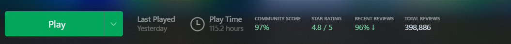

Community Score
The percentage of positive reviews across Steam's overall review totals.
ReviewLens brings Steam's community ratings into one clean, compact row. See what players think without leaving the game you're browsing.
Illustrative display, based on the supplied Steam screenshot.
Four useful metrics, neatly integrated into the Steam interface.
The percentage of positive reviews across Steam's overall review totals.
A straightforward five-star equivalent of the community approval score.
A quick look at current reception, with a direction indicator compared with the overall rating.
Know the review sample size behind a score, not just the percentage.
Compact typography, useful hover details and no additional windows.

ACTUAL STEAM TOOLBAR SCREENSHOTReviewLens works with the Millennium framework for the Steam desktop client.
Get ReviewLens v1.5.10Install MillenniumSet up the Millennium framework in Steam.
Download ReviewLensGet the ready-to-install .star file from this page.
Enable and restartInstall the package, enable it in Millennium and restart Steam.
Browse your LibrarySelect any supported game. ReviewLens finds the scores automatically.
No. ReviewLens uses public Steam endpoints. There's no API key or paid plan.
No. The star score is calculated from Steam community approval. It is not a separate rating submitted by you.
Yes. When you open a game in the Steam Library, ReviewLens uses its AppID to retrieve relevant public review information.
Some titles lack public review data or have unsupported app types. When data is unavailable, ReviewLens may display N/A.